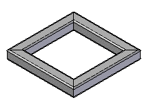
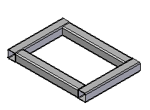
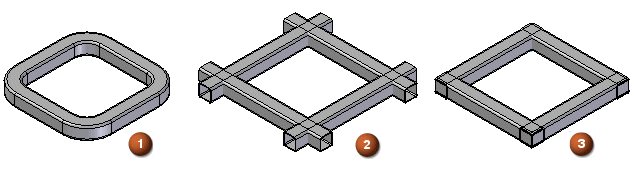
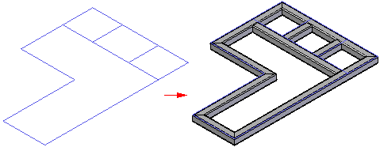

Creating a structural frame
The Frame command, located on the Tools tab, creates structural frames along an existing path consisting of a sketch or assembly sketch. Creating a structural frame consists of:
When you select the Frame command, the Frame Option dialog box is displayed for you to define frame standards, corner treatment, and other options for the structural frame.
Specifying corner treatment
The Corner Treatment Options section of the dialog box is where you define corner treatment (end conditions) for the frames.
You can use the following corner treatments:
|
Mitered |
 |
|
Butt |
 |
You can also apply a radius to the adjacent frame components (1), extend the end of the frame component (2), or apply no end conditions to the adjacent frame components (3).

Specifying frame component standards location
The Frame Component Location section of the Frame Options dialog box is where you specify the location of the frame component library. The frame components can be stored in a standard parts library or in a local or network folder.
If the frame components are stored in a folder, you can instruct Solid Edge to look for the components in any folder, including a folder on another machine on the network. You can do this on the File Locations page (Solid Edge Options dialog box). Select the Frame Local Library Folder entry and modify it to point to the desired location. By default, Solid Edge looks for the frame components in the Solid Edge 2023\Frames folder.
You can use Solid Edge Administrator to control a user's ability to change the location of the Frame Local Library folder.
Identifying the cross-section type and size
The location of the component folders determines the dialog box that is displayed when you select the cross-section type and size on the Frame command bar.
-
If you selected Standard Parts Library on the Frame Options dialog box, the Standard Parts dialog box is displayed for you to select the cross section.
-
If you selected the Browse for component option on the Frame Options dialog box, the Frame Wizard dialog box is displayed for you to select the cross section from a local or network folder.
Selecting path segments for placing the frame
After specifying the source for the frame components in the Frame Options dialog box, you select a component cross section on the Frame command bar and select the path segments to define the frame structure. When you select Finish to create the Frame, the frame components are added to the frame structure in the assembly model.

How do I
Add a custom frame componentCreate a structural frame
Save a structural frame component
Edit frame end conditions
Edit a frame cross section
Create a frame end cap
Edit a frame end cap
Trim or extend a frame
Create frames with weld gaps
Learn more
Structural frame design workflowSaving frame components
Saving structural frame components
Look up more details
Frame commandFrame command bar
Frame Options dialog box
Adding members to a frame
Edit End Conditions command
Edit Cross Sections command
Frame snap points
Frame End Cap command
End Cap Options dialog box
Frame Origin command
Trim/Extend command
Trim/Extend command bar
Adding custom frame components to a local library
Creating a custom structural frame component: best practices
Defining hole locations in a frame